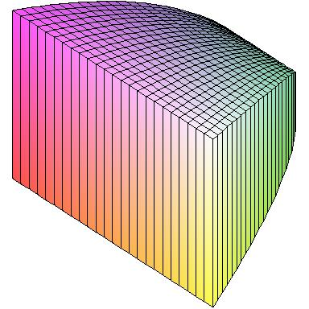
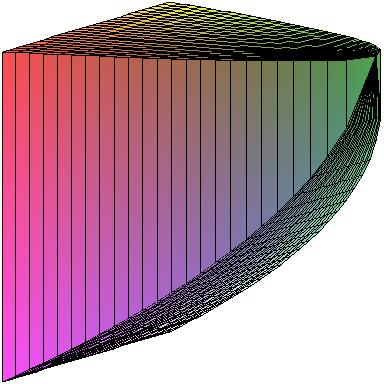
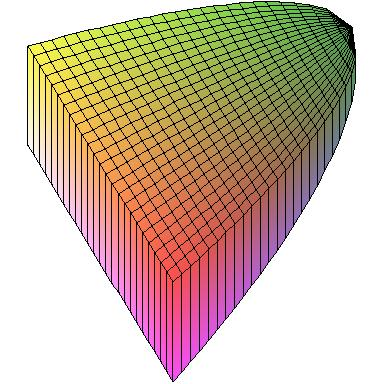
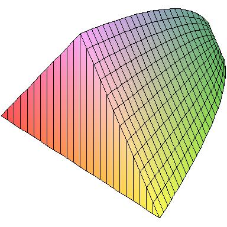
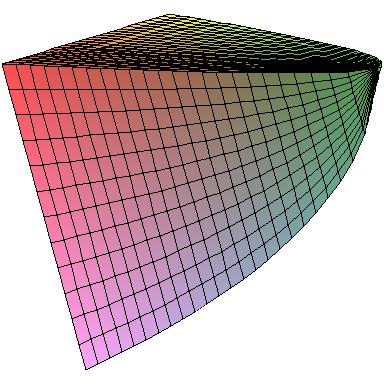
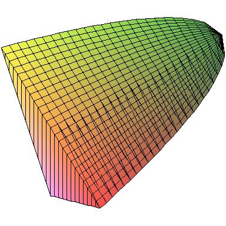

Here are some figures produced using Maple 11.
First, here's the solid described in problem 35 from section 6.2. The base is the parabolic region B = {(x,y): x2 ≤ y ≤ 1} and the cross-sections perpendicular to the y-axis are squares. All these figures represent the same solid, just viewed from different angles. In the left-hand figure, you can see the square cross-section. In the middle, the face pointing up is the region B.
  
Problem 34 concerns a solid with the same base region B; however, the cross-sections are now equilateral triangles.
  